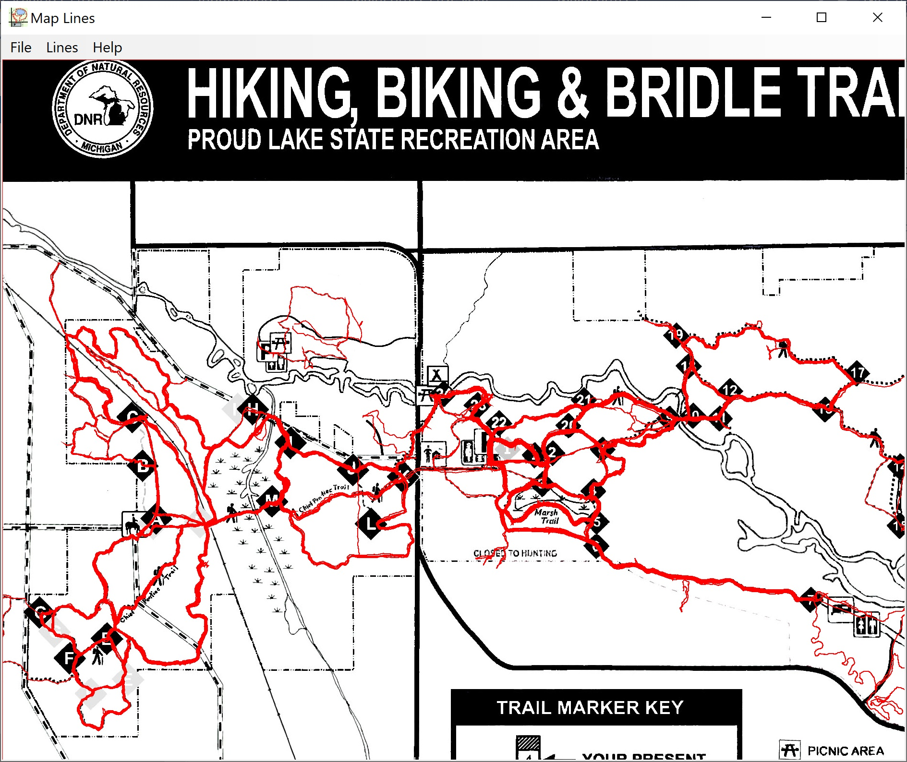

Map Lines is a C# application that primarily allows you to digitalize points on images by drawing lines between them. It saves the pixel coordinates of points on the line in a file. It was originally designed to trace old railroad beds in Northern Wisconsin that had been drawn by hand on USGS geologic maps by James P. Kaysen with the purpose in mind to display these digitally in an application such as Google Maps. It can more generally be used to draw GPS tracks or other data on an image of a map, such as one with hiking trails.
The digitizing capability in Map Lines does not require a coordinate system other than the x,y pixel coordinates of the image. However, it is necessary to convert the pixel coordinates to latitude and longitude coordinates in order to display GPS data if those are used. To do this a calibration file is needed. The calibration file must be created outside of Map Lines, typically in a text editor. See Calibration Files for more details.
Map Lines can also be used to digitize graphs, that is, get the x,y pixel coordinates of the points of the lines in the graph..
To use Map Lines you would typically load an image file and a calibration file (if GPS data is to be used). You can then draw lines or generate them from GPX files. You can start and end lines using the right-click Context Menu. You can save the lines as a Map Lines .lines file (one line for each point consisting of the x and y pixel values), a transparent PNG file consisting of only the lines, a PNG file of the original image including the lines, a GPX file, or a CSV file. The PNG files can be used in MapImage provided you have the corresponding calibration file.
Note that most of the user interface elements, such as buttons, text entries, checkboxes, etc., have tool tips which should appear when you hold the cursor over them. This is the easiest way to get help on what these controls do.
Acknowledgements are at the end of the page.
This is a screen shot of the Map Lines interface. Lines from many GPX files have been loaded, and the Calibration Lines between the calibration points are also shown. In this case the calibration points are at the corners, but that is not necessary.

If you are installing from a download, just unzip the files into a directory somewhere convenient. Then run it from there. If you are installing from a build, copy all the files and directories from the bin/Release directory into a directory somewhere convenient.
To uninstall, just delete these files.
Note that there is an open-source Android application MapImage that displays your current location on a map that has been calibrated in this way.You can use this to show where you have been before as well as where you are now. The following is a screen dump from MapImage showing the current location and assorted previous GPS tracks on a map of hiking trails. The GPS tracks were added to the original image of the map using Map Lines.
The calibration is specified in a text file with extension .calib consisting of lines of the form:
integer x, white space, integer y, white space, decimal longitude, white space, decimal latitude.
These can optionally be followed by:
white space, then a comment.
x and y are the pixel coordinates in the image, starting at (0, 0) in the upper left and ending at (width-1, height-1) in the lower right. There must be at least three such lines, but there can be as many over this as you like. Map Lines (and also MapImage) will find the best fit to all the values specified using a matrix method known as Singular Value Decomposition. The points specified must be sufficient to determine the latitude and longitude. Three co-linear points will not work.
This is an example of a calibration file corresponding to an image of width 832 and height 1079. (The calibration points are at the corners in this case):
0 0 -83.603411 42.642879 NW 831 0 -83.568607 42.643245 NE 831 1078 -83.568255 42.609770 SE 0 1078 -83.603059 42.609404 SW
An image manipulation program, such as Photoshop, can be used to find the pixel values of points for which you know the latitude and longitude. These could be known latitude and longitude for some landmark or the corners of the map.
Another way to determine the corner values is by placing the image as an overlay in Google Earth (Add | Image Overlay) then adjusting it to match up with what is displayed in Google Earth. You can then put placemarks on the corners and get the latitude and longitude from the placemarks. Use Add Placemark and move the pushpin icon so the point is at each corner in turn.
Note that the calibration is not limited to GPS latitude and longitude. It can be calibrated to any 2D coordinate system, for example, the x and y axes of a graph.
Plus key : Zooms in. (Can also be Ctrl+Plus as it does not check for modifier keys.)
Minus key : Zooms in. (Can also be Ctrl+Plus as it does not check for modifier keys.)
Spacebar : Cursor changes to a hand and you can pan the image by dragging.
Ctrl+0: Centers the image.
Ctrl+1: Resets the image to the starting position (not zoomed, top left corner at the top left).
Open an image. Most common image formats are supported.
Opens a calibration file. These typically have a .calib extension.
Quits Map Lines.
Brings up a dialog where you can manage the existing lines, including deleting, renaming, changing the color, and moving them up and down in the order. Use this dialog to manage the lines you created if necessary.
Opens a lines file. These typically have a .lines extension. They consist of one line for each point consisting of the x and y pixel coordinates separated by a space. Blank lines and lines starting with # are ignored.
Generate lines from a GPX file or files. More than one file can be chosen.
Save the existing lines as a lines file.
Save the lines in CSV format. For each there will be a description line and a line for each point with the x and y pixel coordinates, comma separated.
Save the lines in GPX format. The resulting files can be loaded into Google Earth, for example. There must be a calibration file loaded.
Save the existing lines as a PNG file. It will be transparent except for the lines and can be pasted or added as a layer in most image manipulation programs.
Saves the current image along with the lines as a PNG file. This is typically used to generate an image from the original image but with GPS tracks.
Brings up a window with this HTML file. It works as a rudimentary browser with links and Back and Forward buttons.
Gives information about this application including the version.
You get the context menu by right clicking on the image.
Has options to zoom 200%, 100%, 50%, and 25%. Zooming is also available with the Mouse Wheel.
Toggles Panning mode. When Panning mode is on, the cursor is a Hand, and moving the mouse pans the image. Panning mode can also be initiated temporarily by holding the Space key down.
Resets the view to the initial state (not zoomed, top left corner at the top left).
Start a new line. The next click on the image will be the starting point (nothing will show), and with each successive click a line is drawn from the previous point.
Stop adding points to the current line. The next Start Line with be a new, disconnected line.
Deletes the last point. Usually used when you did not get the point in the right place.
Clears all of the lines. Use Edit Lines for more individual control.
Generate lines from the calibration file. If you are using the corners of the image as calibration points, this allows you to check that they are, in fact, on the edges of the image, as they should be if your calibration is correct.
Map Lines is available from GitHub at https://github.com/KennethEvans/VS-MapLines.
It is a replacement for https://github.com/KennethEvans/maplines which is a Java application.
It uses the NuGet package Math.NET Numerics and uses Utils.dll from https://github.com/KennethEvans/VS-Utils.